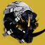

推荐者：
马sirFPS#5846冰猎开荒回转套
 猎人#row:elements/class-abilities/分节/猎人 · 冰影 · 强力S29 · 凯旋纪念碑
猎人#row:elements/class-abilities/分节/猎人 · 冰影 · 强力S29 · 凯旋纪念碑
萌新开荒超硬丢丢冰
适用环境
# 冰猎开荒回转套 推荐人：马sirFPS#5846 描述：萌新开荒超硬丢丢冰 更新：2026.9.10 场景：宗师/终极 分支：冰影 强度：强力 核心：忠诚面具 ## 审核意见 缺少强化雷的爆发输出，但是多了星象闪身的减伤 ## 职业 职业：猎人#row:elements/class-abilities/分节/猎人 超能：沉默狂啸#2625980631 星相：冷酷收割#1920417385、严冬帷幕#2934767477 碎片：传导之吟#2483898429、韵律之吟#2483898430、裂隙之吟#3469412971、折角之吟#3469412968、破碎之吟#3469412975 手雷：碎裂手雷#1399218 近战：枯萎之刃#1341767667 职业技能：赌徒闪身#426473317 ## 武器 异域武器：混乱无序#2376481550 传说武器：炽天使薄雾#1524387902 | 霜华窃取者#1955165503、集体拳击#1888882410、问题解决者#3454102905 传说武器：玫瑰罗盘#2723419129 | 盗墓者#1631667848、战嚎炮管#2360754333 ## 护甲 异域护甲：忠诚面具#2915174768 套装：移民号陨落#set:3120219904 2 件 × 移民号陨落#set:3120219904 4 件 头盔：强力伙伴#2175577211、充沛#2414626352、弹药搜寻者#4294967296 护臂：专注打击#3685945823、鼓舞爆弹#3726719281、伤害感应#377010989 胸甲：灼烧抗性#3194530172、完全充能#2577472338、震荡阻尼器#3719981603 腿部：层层不绝#3994043492、元素充能#3712696020、绝缘#3325390304 职业物品：特殊终结技#4004774872、实用快速启动#3160387771、投弹手#4188291233 ## 神器 神器：杀手公爵药剂师背包 模组：晶体转换器#4037132131、风寒#4037132128、削弱清敌#611645144、治疗能量球#611645146、迎接风暴#611645150、冰冷伺候#3117519995、大肆屠杀#4037132130 ## 六维 六维：生命 ~ ｜ 近战 70～100 ｜ 手雷 80～100 ｜ 超能 80～100 ｜ 职业 100 ｜ 武器 150+ ## 注解 优点：可下本压50光宗师，依赖充能近战启动职业技能回转手雷近战，缺乏弹药时留意护甲充能终结技绿弹，弹药满可获得冰影碎裂水晶（碎裂手雷可破冰）补充护甲充能使用职业技能消耗护甲充能可无限获得充能妙用减伤，拾取冰影碎片可回复生命，混乱无序叮两发伤害拉满可上虚弱易伤。缺点：饥荒开局无弹药（或者戴德霍斯冲锋枪破屏障）无法破屏障且生存拉满冰霜护甲X7与充能妙用X4混乱无序虚弱也挽回不了冰猎低伤害的弱点。单人终极征服与彪悍修改器未测试慎用，推荐日常压50光宗师。 武器不强求，上述武器推荐萌新极易获取高塔可roll：任意霜华窃取白弹保证碎裂冰影水晶回复冰霜护甲，集体拳击刮痧回复近战（蚊子腿），任意绿弹武器秒破屏障（盗墓者仅为远距离充能近战填装武器，其他位置任意增伤PERK即可） 6维近战手雷保证回转，近战依赖职业技能小怪附近恢复两次，附近无目标恢复一次，剩下武器越高越好依赖大型弹药盒几率，生命值6维彪悍修改器未经测试
职业
武器
神器模组
护甲
- 生命~
- 近战70～100
- 手雷80～100
- 超能80～100
- 职业100
- 武器150+
注解
优点：可下本压50光宗师，依赖充能近战启动职业技能回转手雷近战，缺乏弹药时留意护甲充能终结技绿弹，弹药满可获得冰影碎裂水晶（碎裂手雷可破冰）补充护甲充能使用职业技能消耗护甲充能可无限获得充能妙用减伤，拾取冰影碎片可回复生命，混乱无序叮两发伤害拉满可上虚弱易伤。缺点：饥荒开局无弹药（或者戴德霍斯冲锋枪破屏障）无法破屏障且生存拉满冰霜护甲X7与充能妙用X4混乱无序虚弱也挽回不了冰猎低伤害的弱点。单人终极征服与彪悍修改器未测试慎用，推荐日常压50光宗师。
武器不强求，上述武器推荐萌新极易获取高塔可roll：任意霜华窃取白弹保证碎裂冰影水晶回复冰霜护甲，集体拳击刮痧回复近战（蚊子腿），任意绿弹武器秒破屏障（盗墓者仅为远距离充能近战填装武器，其他位置任意增伤PERK即可）
6维近战手雷保证回转，近战依赖职业技能小怪附近恢复两次，附近无目标恢复一次，剩下武器越高越好依赖大型弹药盒几率，生命值6维彪悍修改器未经测试